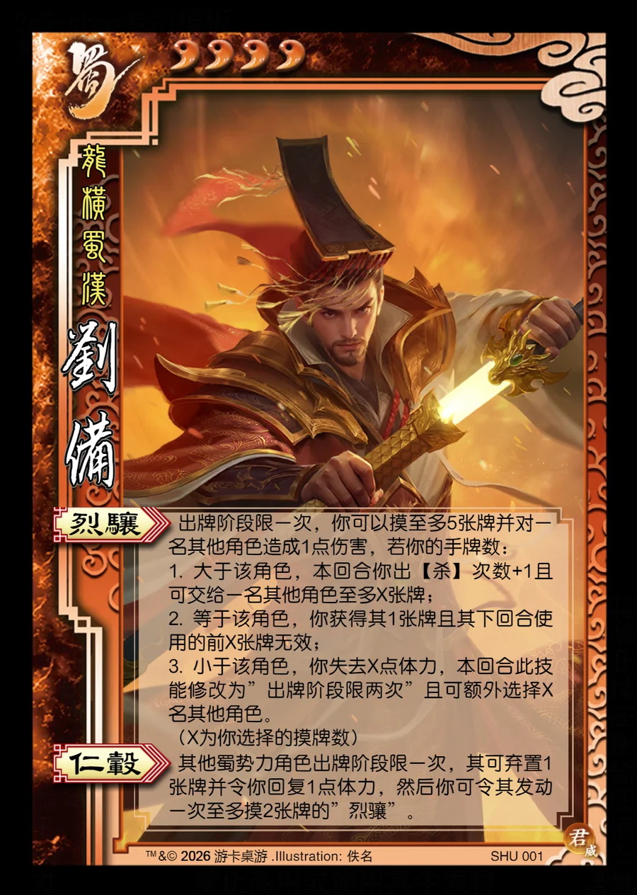

点击卡面查看大图
蜀
威刘备
♥4龙横蜀汉
烈骧
出牌阶段限一次，你可以摸至多5张牌并对一名其他角色造成1点伤害，若你的手牌数：
1. 大于该角色，本回合你出【杀】次数+1且可交给一名其他角色至多X张牌；
2. 等于该角色，你获得其1张牌且其下回合使用的前X张牌无效；
3. 小于该角色，你失去X点体力，本回合此技能修改为”出牌阶段限两次”且可额外选择X名其他角色。
（X为你选择的摸牌数）
仁毂
其他蜀势力角色出牌阶段限一次，其可弃置1张牌并令你回复1点体力，然后你可令其发动一次至多摸2张牌的”烈骧”。